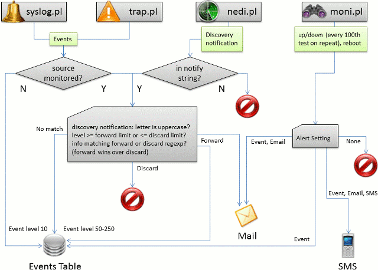

-
-


Monitoring
Discovered devices are not monitored by default. Any thresholds (CPU, Mem etc.) and notifcation triggers are applied from nedi.conf.
Syslog events only receive a level of 10 (Other), thus can't generate alerts.
In order to monitor targets they need to be added to the monitoring table, since devices and nodes are dynamically overwritten by
the network discovery (nedi.pl). You can do this in Devices-List or Nodes-List via "Monitor" button (first show filtered
list of the desired targets). Alternatively you can add single targets in Devices-Status by clicking on the binoculars  . Once added to monitoring, targets can be configured further in Monitoring-Setup.
. Once added to monitoring, targets can be configured further in Monitoring-Setup.
The monitoring daemon moni.pl first sends non-blocking uptime requests to all SNMP targets. Afterwards all other targets are tested sequentially (factoring in availability of their dependencies). This way, a dual homed web-server will only be checked if at least one of the connected switches returned an SNMP uptime.
- TCP ping is used by default for nodes and non-SNMP devices, uptime is chosen for devices (as it can detect intermittent reboots as well)
- The monitoring daemon should be started automatically. It also relies on nedi.conf, where you can set the pause between polls, how many tests a device can fail before it is marked down and how emails should be sent.
- This daemon can be stopped and started from System-Services after changing any settings to quickly get the results. Otherwise you'll have to wait until the next polling cycle starts.
- If a target is reported to be down, an entry is created in the incidents table with the start time set to the time it's detected at. The end time will be added automatically, when the target is responding again. Incidents are acknowledged by classification in Monitoring-Incidents
Due to limitations of the SNMP perl module and non-blocking requests, latencies are not accurate anymore! This will be fixed, when a suitable alternative is found...
Message Flows
The following diagram explains how events (originating from syslog, trap, discovery and monitoring) are processed.

 NeDi Help
NeDi Help